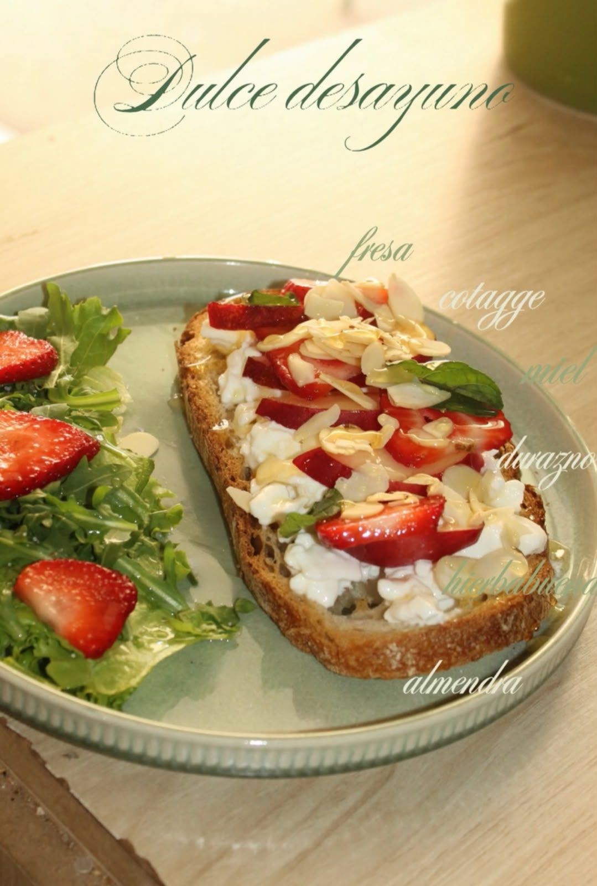

Come rico, siéntete increíble. Descubre la filosofía donde el 80% nutre tu cuerpo y el 20% consiente tu alma.
En 80/20 creemos que la restricción absoluta no es sostenible. Preparamos platillos con ingredientes locales, frescos y reales para darte la energía que necesitas, sin sacrificar el sabor que amas.

Usa nuestro menú digital inteligente desde tu celular, sin descargar apps.
Nuestra cocina recibe tu orden en tiempo real para garantizar frescura.
Recoge en mostrador o disfruta en tu mesa con el balance perfecto.